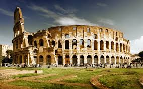
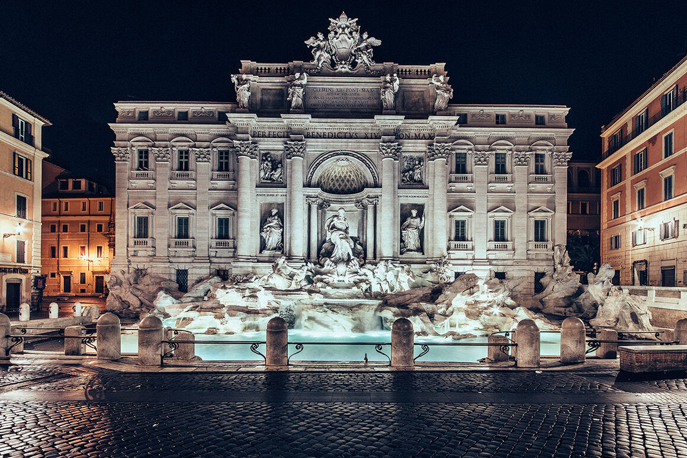

ROMA
Roma, la capital de Italia, es una extensa ciudad cosmopolita que tiene a la vista casi 3,000 años de arte, arquitectura y cultura de influencia mundial. Las ruinas antiguas como las del Foro y el Coliseo evocan el poder del antiguo Imperio Romano. La ciudad del Vaticano, sede central de la Iglesia católica romana, cuenta con la Basílica de San Pedro y los Museos del Vaticano, que albergan obras maestras como los frescos de la Capilla Sixtina de Miguel Ángel.

Valeria: De momento, en este preciso instante, Roma es mi ciudad favorita por muchas razones. Roma es una ciudad con mucha, mucha historia y te aseguro que te sentirás siendo parte de ella en muchos de los lugares que visitarás o por los cuales pasarás sin querer queriendo mientras paseas por sus bellas calles.
El gran Coliseo Romano Pues bien, el Coliseo de Roma era un gran anfiteatro romano, el más grande e importante de todos los que han existido. En realidad, se llama Anfiteatro Flavio, pero todo el mundo lo conoce como el Coliseo romano.
Basílica de San Pedro La basílica papal de San Pedro, conocida comúnmente como basílica de San Pedro, es un templo católico situado en la Ciudad del Vaticano. La basílica cuenta con el mayor espacio interior de una iglesia cristiana en el mundo,
La Fontana di Trevi es una de las mayores fuentes monumentales del Barroco en Roma. Según la actual división administrativa del centro de Roma, está situada en el rione de Trevi
El Foro Romano Era el foro de la ciudad de Roma, es decir, la zona central, semejante a las plazas centrales en las ciudades actuales, donde se encuentran las instituciones de gobierno, mercado y religión.